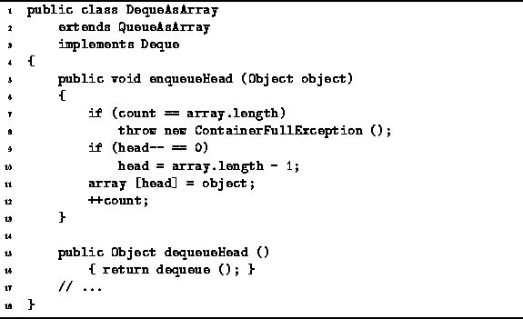

Data Structures and Algorithms
with Object-Oriented Design Patterns in Java
Data Structures and Algorithms
with Object-Oriented Design Patterns in Java
Program  introduces an array implementation of a deque.
The DequeAsArray class extends the QueueAsArray class
introduced in Program
and implements the Deque interface defined in Program .
The QueueAsArray class provides almost all the required functionality.
Only five of the six methods introduced in the Deque interface
need to be implemented.
introduces an array implementation of a deque.
The DequeAsArray class extends the QueueAsArray class
introduced in Program
and implements the Deque interface defined in Program .
The QueueAsArray class provides almost all the required functionality.
Only five of the six methods introduced in the Deque interface
need to be implemented.

Program: DequeAsArray class ``Head'' methods.
 Copyright © 1998 by Bruno R. Preiss, P.Eng. All rights reserved.
Copyright © 1998 by Bruno R. Preiss, P.Eng. All rights reserved.